Modernising a legacy EHR for the people who run the floor
MatrixCare, by ResMed, is where nurses in skilled nursing and senior living facilities write orders, chart vitals and log progress notes. It had worked for over a decade. It also looked and behaved like it. This is the story of how I redesigned its most used clinical modules without breaking the habits of thousands of busy clinicians.
A 20 year old application that nurses rely on every shift
This is about a 20 years old application which has been helping nurses in charting patients data effectively. It was built using older technologies like Magic and Java. The primary users who use it the most are Certified Nursing Assistants (CNAs) and Registered Nurses. These users are not tech-savvy, and they need to spend more time taking care of patients and less time dealing with computer stuff.
Now, we want to make it better by bringing in new features that match the way things look and work nowadays. It's not just about making it look good; it's about making it easier for the nurses to do their jobs efficiently. The idea is to update the design so that nurses can move around different parts of the software without getting confused and wasting time. That way this helps to reduce their cognitive load.
Legacy software
Built on Magic and Java two decades ago. Dense tables, tiny text and underlined links everywhere, with every new feature added on top of the old one.
Users are not tech savvy
CNAs and Registered Nurses learned the system once and rely on muscle memory. Change had to feel familiar, not like a new tool to relearn.
Many roles, little time
Nurses, CNAs, physicians and admins share the same screens with different jobs. Time with patients is valued more than time on the computer.
How the work moved
Mapped the users, their roles and the modules they touch most.
Heard from nurses and existing customers directly.
Checked what people said against what they did.
Orders, notes, vitals and observations, with fewer steps to each goal.
Tracked time on task, clicks, drop-offs and delight.
What made this harder than a redesign
- Resource constraintsThe project had limited resources and tight deadlines.
- Team multitaskingThe team had to juggle multiple projects, impacting quality.
- Technical limitationsThe existing technology constrained design changes.
- Documentation gapsLack of systematic documentation led to knowledge gaps.
- Code conflictsCode changes from other teams caused integration issues.
Listening first
User interviews
Targeted interviews identified modules that were most frequently used, uncovering challenges and areas for improvement.
CXI survey
A comprehensive survey gathered feedback from existing users, highlighting key areas for improvement and user experience enhancements.
Then, watching what people actually did
- Internal analyticsLeveraging the internal analytics tool, we tracked user behavior and identified bottlenecks in their workflows.
- Path analyserThe path analyser helped us understand user journeys, identifying specific tasks and areas requiring optimization.
- User retentionWe focused on improving user retention by addressing challenges identified through data analysis.
What we measured
The research pointed to the same place: the Order Writer and the charting modules nurses open many times a shift. That is where the redesign started.
First, make an order list you can actually scan
The old list showed every detail as a blue underlined link: drug, strength, frequency and time all stacked into one cell. Nurses read it line by line to find one order. There was no search, no filter and no way to see which orders needed attention.
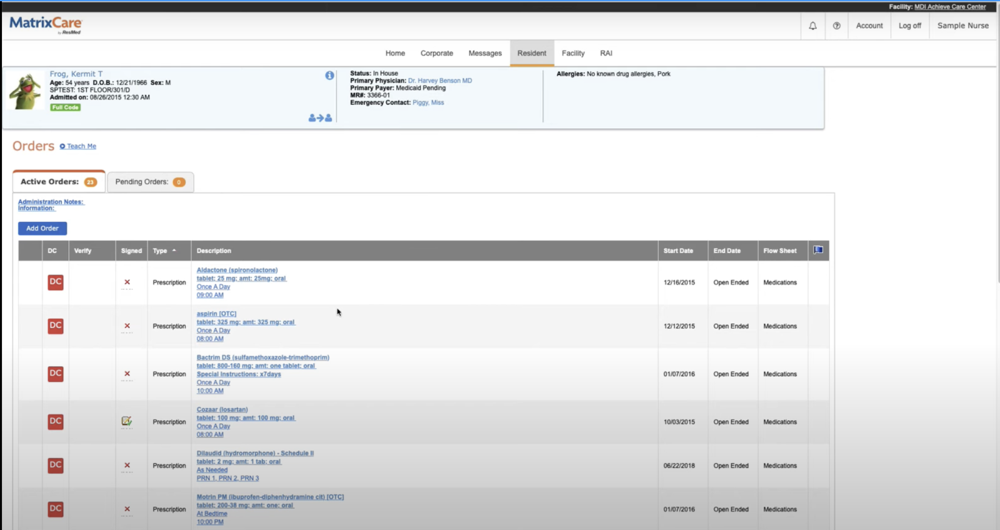
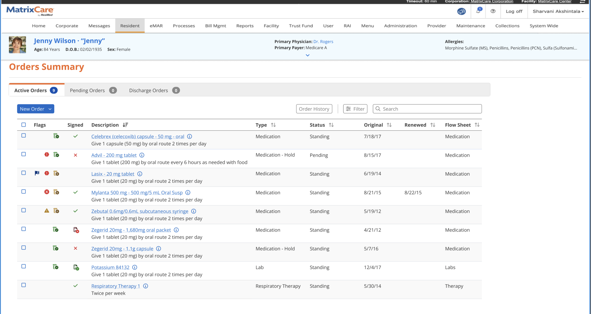
- Human-readable instructions"Give 1 capsule by oral route 2 times per day" instead of a string of links.
- Flags columnAlerts, holds and interactions are visible before an order is opened.
- Search, filter, historyPlus a Discharge Orders tab, so nothing hides behind another page.
Then, cut the path to a new order
Writing a medication order used to be a relay across four pages. Pick a type from a dropdown. Search the drug. Pick a dispensable form on another page. Only then fill a long form, with allergies shown far from the drug. We rebuilt it as one search and one form.
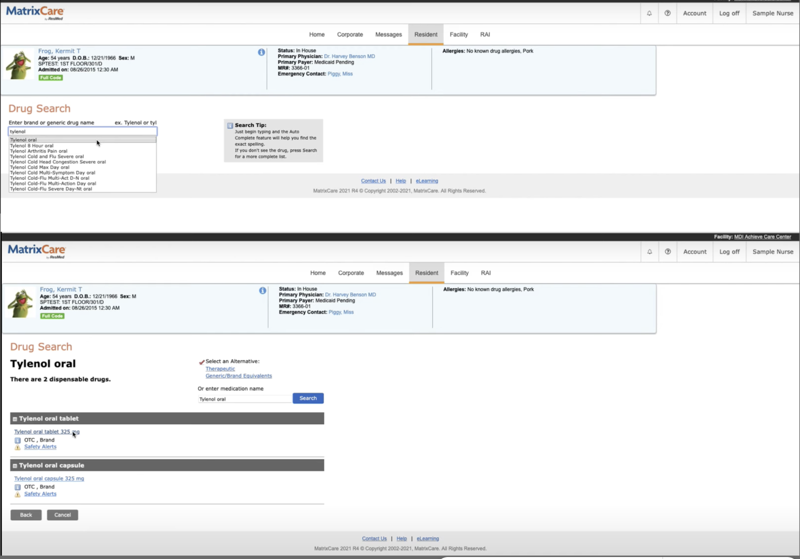
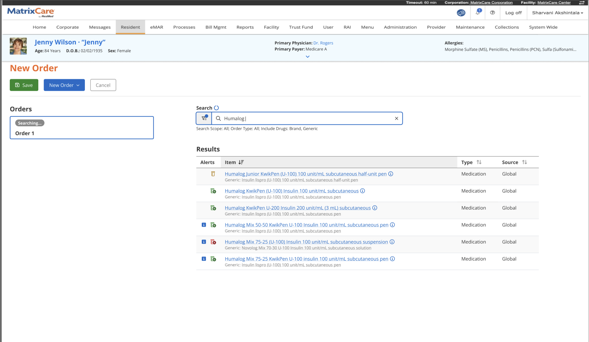
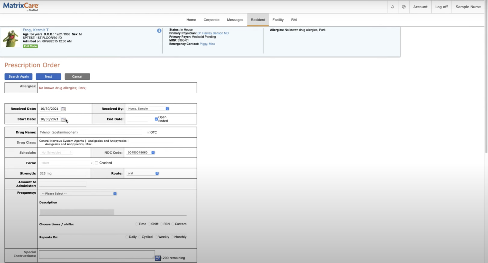
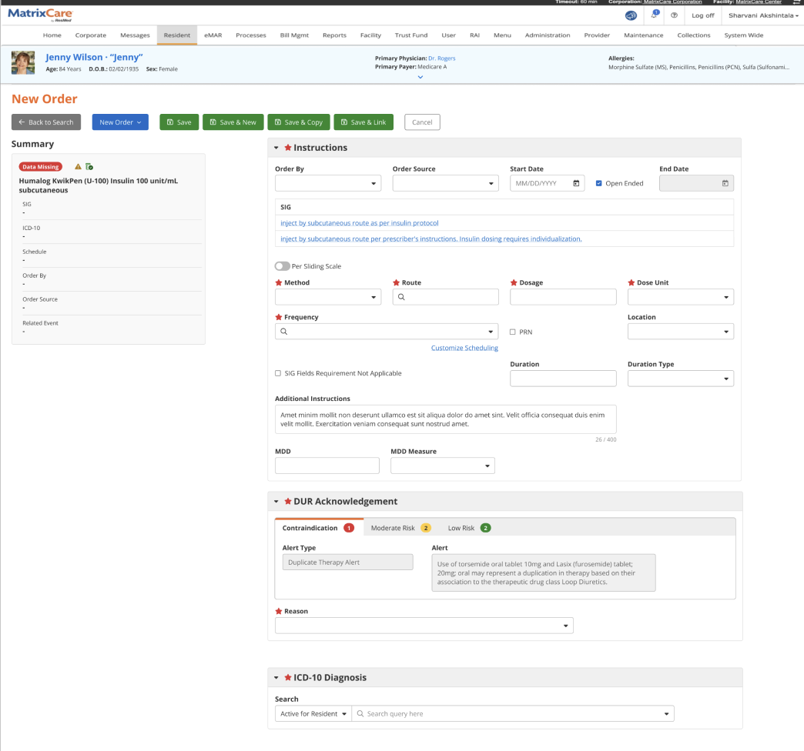
- Summary that follows youThe left panel shows what is still missing, so nothing is saved half done.
- DUR acknowledgementContraindications, moderate and low risk alerts sit inside the form, with a required reason.
- Save & New, Save & CopyAdmission orders come in batches. Nurses no longer restart the flow for each one.
Notes you can find at shift change
Handover depends on reading the last few notes quickly. The old grid squeezed long notes between icon columns and gave no way to search. The new list gives the note room to breathe, shows who signed it and in what discipline, and puts search next to Add Note.
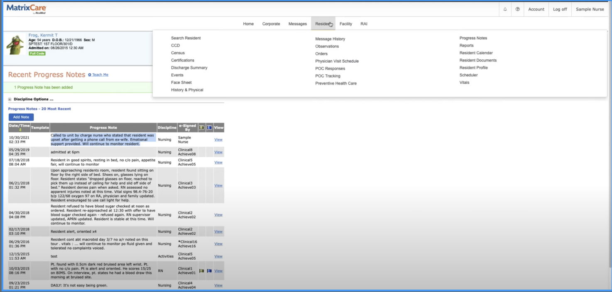
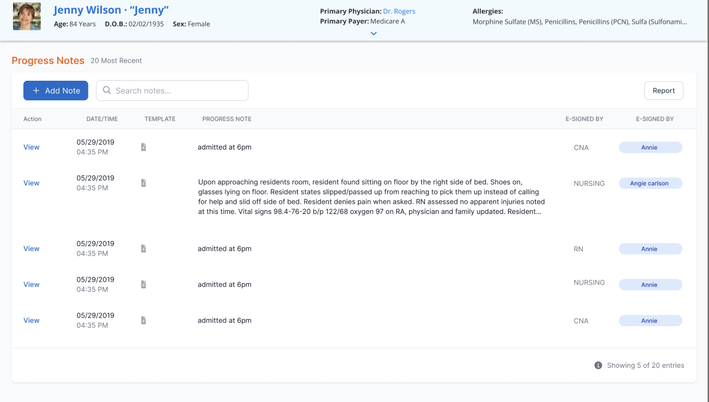
Small changes where muscle memory matters most
Vitals are charted many times a shift. Here I deliberately kept the layout nurses knew and fixed only what slowed them: grouping, bold labels and plain "Check all" links. Observations got the bigger change. A wall of 30 links became a searchable, collapsible list.
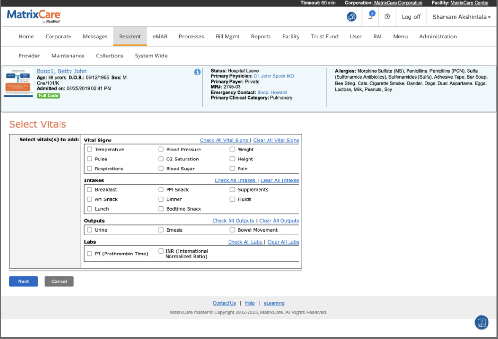
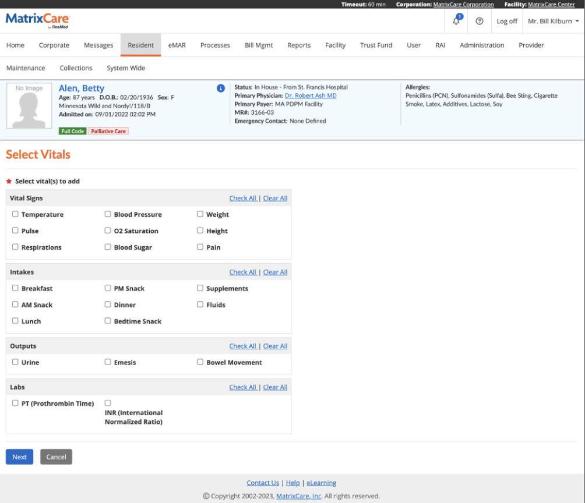
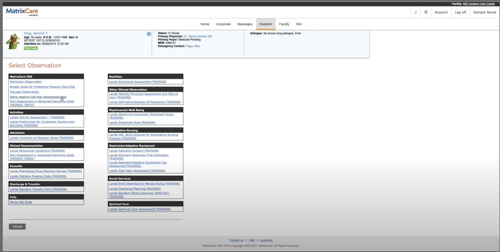
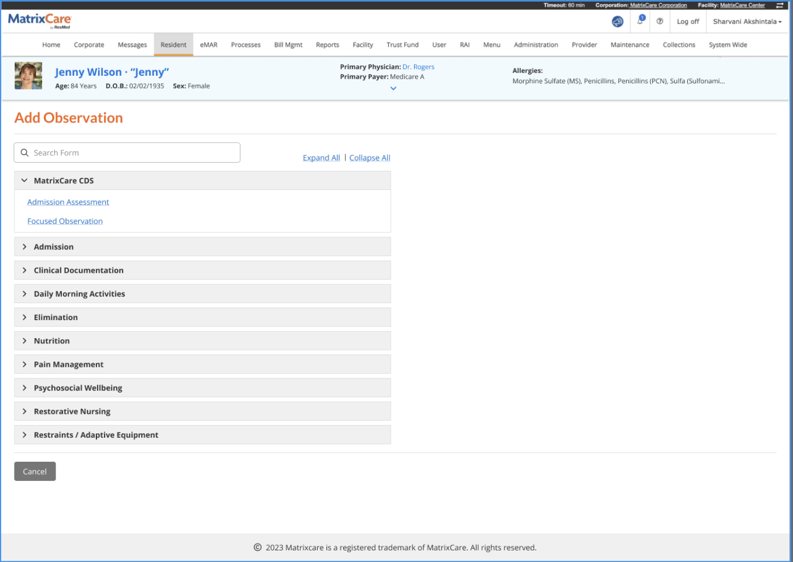
Across every module
- Accessibility auditThe WAVE tool helped us identify and address accessibility issues in the application.
- Floating navigationThe introduction of a floating button provides easy access to the top of the page, eliminating frustration from scrolling.
- Enhanced button accessibilityButton accessibility was improved, making them easier to use and navigate for all users.
- Mandatory field emphasisMandatory fields were made more noticeable, accelerating form filling and reducing errors.
- Key-value pairsKey-value pairs were implemented to streamline data presentation, enhancing readability and comprehension.
- Increased white spaceThe layout was adjusted to increase white space, improving readability and reducing eye strain.
- Responsive designThe application was made responsive, adapting to different screen sizes and devices, ensuring a consistent and user-friendly experience for all users.
Same product, less friction
The biggest win was not visual. It was that clinicians could adopt the new screens without retraining, because the map they knew stayed where it was.
In healthcare, modernising means respecting the habits that keep residents safe
My years in clinical dentistry taught me that clinicians trust tools that stay out of the way. This project was about earning that trust: fewer steps, safety in plain sight, and nothing moved without a reason.
See the full case on Behance ↗